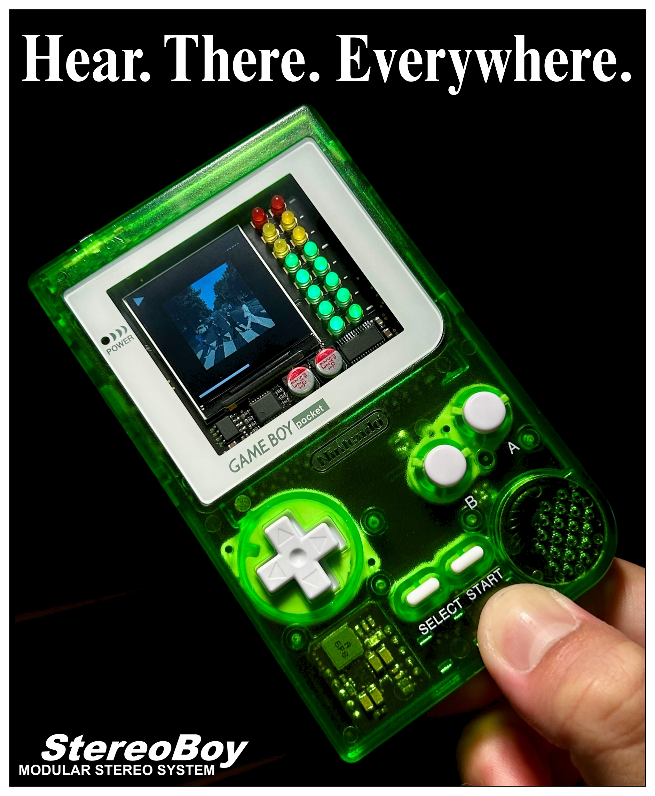

"Technology alone is not enough. It’s technology married with the liberal arts, married with the humanities, that yields the results that makes our hearts sing."
- Steve Jobs
First off, I would like to thank my teammates Emri, Shubham, and Andrew for really letting me off the leash with this project. It is only thanks to them I was able to bring my dreams to life, and I’m afraid they will never truly understand the amount of appreciation I have for their support. So thank you guys.
Skip the boring story
StereoBoy is something that’s been on my mind for the better part of a decade. Throughout my life, there were multiple efforts to make my own portable audio player, only for me to fail or give up one way or another. The earliest I remember is when I was about twelve. I really wanted a customized enclosure for my MP3 player. My plan was to take the circuit board out of the plastic casing and shove it inside an Altoids tin, and drill holes for the buttons. I wanted to convert it to an iPod shuffle of sorts, so I decided to cut the display ribbon cable as I figured I didn’t need it. Cue my surprise when the device died as soon as I cut the ribbon cable. I lost interest in that project shortly after.
Several years later, I was a junior in high school. This time, I felt I had the skills to make my own. I tried to hack together an Arduino Nano and a cheap MP3 module together on a perfboard to fit inside a GameBoy shell, but I had trouble wiring everything together, and my soldering wasn’t the best. So I eventually gave that up as well.
Ever since then, for the next several years, I tried many attempts at designing a credit card sized MP3 player. I worked on the project on an on-and-off basis, often restarting from scratch because I never seemed to know exactly what I wanted. I would chew on it for a couple weeks, get bored, and forget about it for a few months, and the cycle would repeat itself again. It was also around this time I started toying with the idea of a cartridge based system, but my skills were not quite up to par, and the designs never went past the initial design phase.
Well, came 2025, and I finally felt like giving it another shot. This time, I genuinely felt like I had the chops to make my own version from scratch, and I was dead-set on giving it a cartridge interface for physical storage and modularity. I started officially working on it during the summer of 2025, but things really took off around fall, when I briefly mentioned it to my Senior design teammates. We were all looking for ideas, and my teammates found it pretty interesting, so we decided to give it a go.
And boy, did we give it a hell of a shot. Fall semester went great – I designed a solid architecture and made significant progress in board design – but things took off like a rocket in spring, when I got audio playback fully working a couple days before school started. This lit a fire under us, and we went full gas from that point on, never lifting our foot off the throttle for even a single second. Every few days we reached some minor milestone - audio effects, album artwork, graphics – and each one motivated the team more and more. This led to me coining the phrase “drip-fed dopamine”, which I often used to describe our progress to the course staff and fellow classmates.
Our unrelenting motivation ultimately led to our team winning the Purdue Spark Challenge for best Senior Design project, which was the first award I’ve ever won in my life. It was a moment to stop and realize what it means to do great work with a great team. If someone suddenly stops me on the street and asks me what it feels like to make a miracle, I’ll know – if I can only find the words to describe it.
Anyways, enough about my life story, let’s get on with the project.
WHAT IS STEREOBOY?
StereoBoy is a portable and modular stereo system designed to drop right inside a GameBoy shell, with the songs stored in removeable cartridges. Think of it as one of those Sony Walkman devices, the chunky cassette players our parents used to listen to music, except while the Walkman's cassette tapes hold nothing more than music, the cartridges on StereoBoy can be so much more. The cartridge system allows users to add their own software and hardware onto the device, allowing users to easily extend and augment the system to fit their needs. This means StereoBoy can interface with different sensors, work with other electronic musical devices, or even play games!
The idea was to build a fun device where creative users can share their own hardware and software with others, along with great music of course. I really miss the days of physical media where people used to meet in person to share those things. StereoBoy is my idea of how we can sort of bring that back in a meaningful way. Nowadays, sharing great content is little more than tapping a button on your phone and hoping the other side sees it. So much is lost in that process, and I really think it can be, and should be, better than that.
There is also a hi-res color display to provide interactive visualizers that react to the music, and it provides some really mesmerizing visuals to go along with the songs you love. The whole device also feels very chunky and hefty in your hand, and I mean this in the best possible way. The buttons are super clicky and satisfying to use. We're real big fans of this device, obviously. All of us plan on using it in the decades to come, and being part of the StereoBoy team was easily one of the greatest joys of my life.
SPEC LIST
More to come...